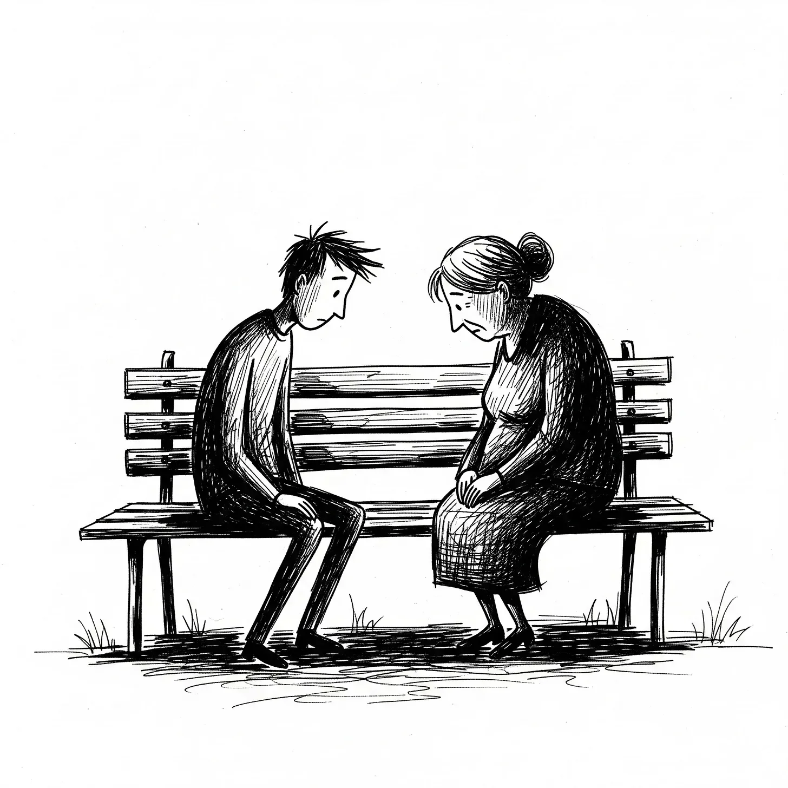

“그 사람 파이프에서 나는 체리 바닐라 향이야.” 여자가 구겨진 종이 같은 목소리로 말했다. “7시 정각, 뉴스가 끝난 직후에 그 냄새를 맡곤 했지. 그의 창문에서 피어오르던 달콤한 유령이었어.”
[“It’s the cherry-vanilla from his pipe,” the woman said, her voice like crumpled paper. “I’d smell it right at seven, just after the news. A sweet ghost curling from his window.”]
그녀 옆에 있던 젊은 남자는 벤치의 깊은 나뭇결을 손으로 훑었다. “저한테는 그가 휘파람 불던 자리의 그 침묵이네요. 항상 음정이 엇나갔죠. 클래식이었는데. 세상의 이 한구석을 지탱해 주던 소리였어요.”
[The young man beside her traced the deep grain of the bench. “For me, it’s the silence where his whistling used to be. Always off-key. Something classical. It was a sound that held this corner of the world together.”]
그들 앞으로, 3B 아파트는 건물의 벽돌 얼굴에 박힌 죽은 눈동자 같았다. 아카디 C. 브루트의 창가 화분 상자에서 한때 붉은색으로 만발했던 제라늄이 시들기 시작했다. 아이린 애스큐와 앨런 핀, 그들은 서로 모르는 사이였지만, 갑자기 찾아온 공허함을 공유하며 이제 그들의 각기 다른 궤도는 하나로 융합되었다.
[Before them, apartment 3B was a dead eye in the building’s brick face. The geraniums in Arkady C. Brutte’s window box, once a riot of red, were beginning to thirst. They were strangers, Irene Askew and Allan Fin, their separate orbits now fused by a shared, sudden emptiness.]
“심장마비.” 아이린은 건물 자체에 대고 말하듯 툭 내뱉었다. 오랜 고통의 기념비 같은 그녀의 손마디가 빛바랜 수국이 인쇄된 토트백을 꽉 쥐고 있었다. “순식간이었다고들 하더군. 그 빠름이 모든 걸 용서라도 해주는 것처럼 말이야.”
[“A heart attack,” Irene stated, speaking to the building itself. Her knuckles, monuments to old pains, gripped a tote bag printed with faded hydrangeas. “They say it was quick. As if the speed absolves it.”]
“화나지 않으세요?” 앨런이 물었다. 그의 무릎은 오후의 정적 속에서 소리 없는 타악기처럼 정신없이 떨리고 있었다. “그냥 이렇게… 멈춰버린다는 게요. 한순간 휘파람을 불며 꽃을 돌보던 사람이, 다음 순간엔 벤치에 앉은 낯선 이들의 입에 오르내리는 이야깃거리가 된다는 게 말이에요.”
[“Does it make you angry?” Allan asked, his knee bouncing, a frantic, silent percussion against the afternoon’s stillness. “That it just… stops? One moment a person is whistling and tending flowers, the next they’re a story told by strangers on a bench.”]
아이린의 시선은 먼 곳을 향했다. “분노는 사치란다, 젊은이. 수많은 마지막을 겪어보니, 그저 책 한 권이 덮이는 것일 뿐이란 걸 알게 됐지. 이야기가 끝난 거야, 그게 다야.”
[Irene’s gaze was distant. “Anger is a luxury, son. I’ve seen enough endings to know it’s just a closing of a book. The story is over, that’s all.”]
“전 그렇게 생각 안 해요.” 앨런이 꽉 잠긴 목소리로 반박했다. “마치 실수 같아요. 거대한 세상의 흐름 속에서 한 줄을 건너뛰거나 단어 철자를 틀린 것처럼요.”
[“I can’t see it that way,” Allan countered, his voice tight. “It feels like a mistake. A line skipped, a word misspelled in the grand scheme of things.”]
“실수라고?” 아이린의 입술에서 웃음이었을지도 모를, 메마르고 앙상한 소리가 새어 나왔다.
[“A mistake?” A dry, skeletal sound that might have been a laugh escaped Irene’s lips.]
“네. 바로 그거예요.”
[“Yes. Exactly.”]
아카디의 목소리였다. 기억이 아니었다. 차분하고, 명확했으며, 바로 지금 여기에 있었다. 그는 손에서 열쇠 꾸러미를 나지막이 짤랑거리며 건물 현관문에서 그들을 향해 걸어왔다. 그는 낡은 시멘트 색의, 왼쪽 팔꿈치를 꼼꼼하게 꿰맨 자국이 있는 바로 그 가디건을 입고 있었다. 그는 유령이 아니었다. 끔찍하고 불안할 정도로 단단한 실체였다.
[The voice was Arkady’s. It was not a memory. It was calm, precise, and present. He walked toward them from the building’s main door, a set of keys jingling softly in his hand. He wore the same cardigan, the color of old cement, the one with a meticulous darn on the left elbow. He wasn’t a phantom. He was terribly, unnervingly solid.]
그는 앨런의 반대편에 앉아 벤치 위에 기묘한 대칭을 만들었다. 그에게서는 체리 바닐라 향과 함께 깊은 지하실의 공기처럼 차갑고 광활한 무언가의 냄새가 났다.
[He sat on the other side of Allan, creating a strange symmetry on the bench. He smelled of cherry-vanilla and something cold and vast, like the air in a deep cellar.]
“아카디…?” 앨런은 얼굴에서 핏기가 가시며 숨을 내뱉었다. “하지만… 구급대원들이… 저희가 봤어요.”
[“Arkady?” Allan breathed, the color draining from his face. “But… the paramedics. We saw.”]
“아, 그 일은 전부 있었던 일이죠.” 아카디가 태연하게 손을 저으며 말했다. 그는 맑고 흔들림 없는 눈으로 두 사람을 바라보았다. “저는 죽었었어요. 조용하고 잿빛인 곳에 서 있었지요. 처음엔 아무도, 아무것도 없었어요. 그러다 어떤 존재를 느꼈죠. 죽음이라고 불러도 되겠지만, 그 이름은 너무 작게 느껴지는군요.“
[“Oh, that all happened,” Arkady said with a placid wave. He looked at them both, his eyes clear and steady. “I was gone. I stood in a quiet, grey place. There was no one and nothing, at first. Then, there was a presence. You can call it DEATH, I suppose, though the name feels too small.”]
아이린의 회의적인 세계관에 금이 갔다. 그녀의 입술은 핏기 없이 일자로 굳어 있었다.
[Irene’s skeptical worldview fractured. Her mouth was a bloodless line.]
"잔인하지는 않았어요.” 아카디는 마치 기이한 꿈을 설명하듯 대화하는 어조로 말을 이었다. “그저… 절대적이었지요. 내 삶의 무게가 저울질당하는 게 느껴졌어요. 내가 베푼 모든 친절, 잊고 있던 모든 잔인함, 하나하나의 외로운 순간들까지 전부. 그리고 저는 항의했죠. 아직 끝나지 않았다고 그 존재에게 말했어요. 제라늄에 물을 줘야 했거든요.” 그는 작고 슬픈 미소를 지어 보였다. “그 존재는 내 말을 듣더군요. 그리고는 거래를 제안했죠.”
[“It wasn’t cruel,” Arkady continued, his tone conversational, as if describing a peculiar dream. “It was simply… absolute. I felt my life being weighed. Every kindness, every forgotten cruelty, every single, solitary moment. And I argued. I told It I wasn’t finished. The geraniums needed water, you see.” He offered a tiny, sad smile. “It listened. And It offered a trade.”]
그는 잠시 말을 멈추고, 그 단어의 무게가 고요한 공기 속에 내려앉도록 두었다. “생명 하나에 생명 하나. 균형을 맞추기 위한 간단한 거래였어요. 내 이야기는 몇 페이지 더 이어질 수 있지만, 그 대신 다른 책 한 권이 덮여야 한다고 말하더군요.”
[He paused, letting the weight of the word settle in the still air. “A life for a life. A simple transaction to keep the balance. My story could have a few more pages, It said, but another book must be closed in its place.”]
공기가 희박하고 날카로워졌다. 차 한 대가 지나갔고, 그 차에서 흘러나오는 음악은 더 이상 이해할 수 없게 된 세상으로부터의 불청객 같았다.
[The air grew thin, sharp. A car passed, its music an intrusion from a world that no longer made sense.]
“그리고 그 존재는 나에게 선택지를 주었죠.” 아카디가 거의 속삭임에 가까운 목소리로 말했다. 그는 아이린의 굳은 자세와 앨런의 떨리는 몸을 번갈아 보았다. “나에게 당신들의 이름을 알려주더군요.“
[“And It gave me the options,” Arkady said, his voice dropping to a near-whisper. He looked from Irene’s rigid posture to Allan’s trembling frame. “It gave me your names.”]
벤치에 앉은 두 사람 사이의 연약한 연결고리는 단순히 끊어진 것이 아니었다. 그것은 별처럼 거대하고 차가운 공포에 의해 완전히 파괴되었다.
[The fragile connection between the two on the bench didn’t just break; it was annihilated by a cold, star-sized dread.]
"이건 악몽이야.” 앨런이 터져 나오는 실소를 삼키며 목멘 소리를 냈다.
[“This is a nightmare,” Allan choked out, a broken laugh escaping him.]
“거래일 뿐이에요.” 아카디가 부드럽게 정정했다. “그리고 조건은 이행되어야 해요. 저는 당신들 이야기를 들어주기로 했어요. 그것이 허락된 유일한 예의라고 그 존재가 말하더군요.”
[“A transaction,” Arkady corrected gently. “And the terms must be met. I am to hear you out. That, It said, is the only courtesy afforded.”]
“그럼 날 데려가시오.” 아이린의 목소리는 칼날 같았다. “난 일흔여덟이야. 살 만큼 살았고, 죽음을 이미 마음속으로 준비하고 있었지. 저 젊은이의 이야기는 이제 막 시작됐어. 저 애를 데려가는 건 균형에 맞지 않아.” 그것은 희생적인 존엄함이 돋보이는 장엄한 연기였으나, 가방을 미친 듯이 꽉 쥐는 손길만이 그 연기를 배반하고 있었다.
[“Then take me,” Irene said, her voice a blade. “I’m seventy-eight. I’ve lived my life, and I’ve made my peace with the ending. His story is barely started. There’s no balance in taking him.” It was a magnificent performance of sacrificial dignity, undermined only by the frantic tightening of her grip on her bag.]
“안 돼요!” 앨런이 벌떡 일어섰다. 그의 몸은 온통 날카로운 각과 공포로 뒤엉켜 있었다. “그게 중요한 게 아니에요! 제 인생… 그게 뭔데요? 텅 빈 방? 싫어하는 직장? 일주일, 아니 어쩌면 이주일이 지나도 실종 신고를 해줄 사람조차 없을 거예요. 전 아무것도 아니에요. 각주일 뿐이라고요. 제 책은 텅 빈 페이지들뿐이에요! 그걸 덮어버리는 게 더 인간적인 거죠. 안 그런가요?” 그는 다른 탈출구를 보지 못하는 공포로 광기에 찬 눈을 한 채, 자신의 파멸을 애원하고 있었다.
[“No!” Allan shot up, his body a mess of sharp angles and fear. “That’s not the point! My life… what is it? An empty room? A job I hate? No one would even file a missing person’s report for a week, maybe two. I’m nothing. A footnote. My book is empty pages! It’s more humane to close it. Isn’t it?” He was pleading for his own destruction, his eyes wild with a terror that saw no other escape.]
“텅 빈 삶은 비극이지, 정당화의 근거가 될 순 없어.” 아이린이 떨리는 목소리로 쏘아붙였다. “저 젊은이에겐 시간이 있지만, 나에겐 추억뿐이야.”
[“An empty life is a tragedy, not a justification,” Irene shot back, her voice shaking. “He has time. I have only memories.”]
“무슨 시간이요? 더 큰 공허함을 겪을 시간?”
[“Time for what? More emptiness?”]
아카디는 지친 체념의 가면을 쓴 채 그들을 지켜보았다. 그는 그들의 심판관이 아니었다. 그는 단지 저울을 기울일 손, 그저 도구일 뿐이었다. 그는 그들의 절박하고 추한 진실들이 둘 사이의 공간으로 쏟아져 나오도록 내버려 두었다.
[Arkady watched them, his face a mask of weary resignation. He was not their judge. He was merely the instrument, the hand that would tip the scales. He let their desperate, ugly truths spill into the space between them.]
마침내, 그는 손을 들어 조용히 하라는 신호를 보냈다.
[Finally, he raised a hand for silence.]
그는 무정한 시선을 앨런에게 돌렸다. “그 존재가 저한테 선택지를 보여주었을 때,” 아카디가 부드럽게 말했다. “두 개의 실을 보여주었지요. 하나는 수십 년간 엮여 두꺼웠지만, 그 끝이 닳아 얇아져 있었어요. 다른 하나는…” 그는 앨런을 보았다. “다른 하나는 이미 해져 있었지요.”
[He turned his dispassionate gaze to Allan. “When It showed me the choice,” Arkady said softly, “It showed me two threads. One was thick, woven from decades, but worn thin at the end. The other…” He looked at Allan. “The other was already frayed.”]
깊은 마지못함의 한숨과 함께, 아카디는 일어서서 앨런의 어깨에 손을 얹었다. 앨런은 움찔했고, 아이린을 바라보는 그의 눈이 마지막의 소리 없는 질문을 외치는 동안 목구멍에 흐느낌이 걸렸다.
[With a sigh of profound reluctance, Arkady stood and placed a hand on Allan’s shoulder. Allan flinched, a sob catching in his throat as he looked at Irene, his eyes screaming a final, silent question.]
폭력은 없었다. 앨런 핀은 그저 존재를 멈췄다. 그의 광적인 에너지는 사라졌고, 그의 몸은 고리에서 떨어지는 코트처럼 옆으로 쓰러졌다. 그의 눈은 뜬 채, 목마른 제라늄을 응시하고 있었다. 책은 덮였다.
[There was no violence. Allan Fin simply ceased. His frantic energy vanished, his body slumping sideways like a coat falling from a hook. His eyes were open, staring at the thirsty geraniums. The book was closed.]
아카디 C. 브루트는 손을 거두었다. 그는 목구멍에서 비명이 굳어버린 채 마비되어 앉아 있는 아이린을 보았다.
[Arkady C. Brutte retracted his hand. He looked at Irene, who sat paralyzed, a scream solidified in her throat.]
“미안합니다.” 그가 말했다. 그 사과는 진심 어리면서도 공허하고, 지독히도 쓸모없게 들렸다.
[“I am sorry,” he said, and the apology sounded genuine, hollow, and utterly useless.]
그는 돌아서서 건물 입구로 다시 걸어갔고, 익숙한 딸깍 소리와 함께 문을 열고 안으로 들어갔다. 무거운 문이 한숨처럼 닫혔고, 아이린 애스큐는 이름도 이제 막 알게 된 젊은이의 시신과 함께, 그리고 이해하기에는 너무나 거대하고 끔찍한 진실과 함께, 깊은 정적 속에 홀로 남겨졌다.
[He turned, walked back to the entrance of the building, and let himself in with a familiar click of the lock. The heavy door sighed shut, leaving Irene Askew alone in the profound silence, with the body of a boy whose name she had only just learned, and a truth too vast and terrible to comprehend.]